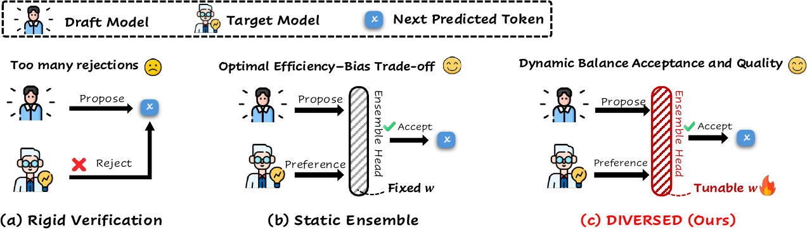
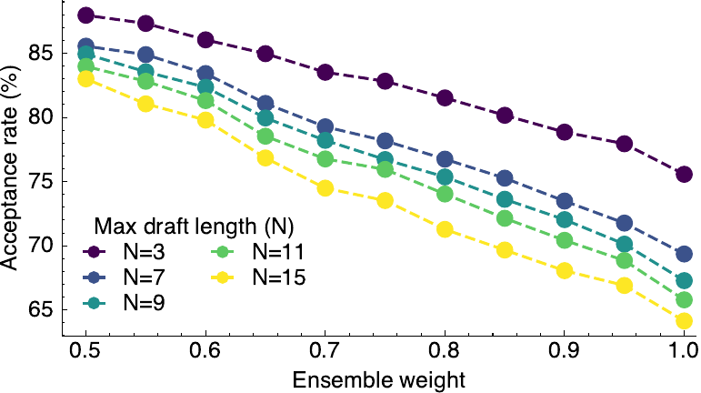
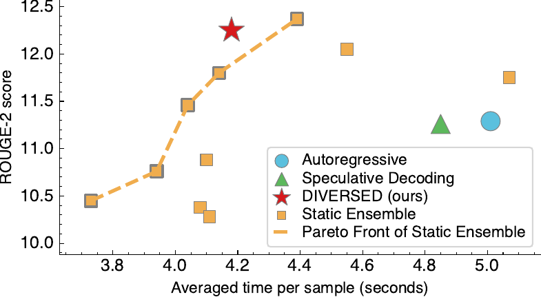
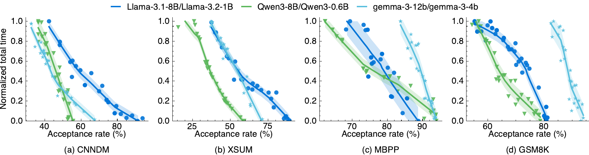

A project page for our AISTATS 2026 paper on relaxing speculative decoding verification with a learned, context-dependent ensemble of draft and target distributions.

Speculative decoding speeds up LLM generation by drafting multiple tokens and verifying them in parallel. In practice, the bottleneck is often not drafting - it is rigid verification. DIVERSED learns when to stay close to the target model and when it is safe to lean more on the draft model, improving acceptance and end-to-end efficiency.
Lossless speculative decoding is elegant but unforgiving. The draft model may propose tokens that are perfectly serviceable for the task, yet those tokens are still rejected because the verifier demands exact agreement with the target distribution. That leaves speed on the table.
Standard speculative decoding accepts a draft token only if the verifier can preserve the target distribution exactly. This is distributionally faithful, but often rejects plausible tokens that would have led to equally good outputs.
A simple fixed mixture of draft and target distributions already reveals a useful trade-off: more acceptance in exchange for controlled bias. The paper shows this fixed rule sits on the theoretical Pareto frontier.
Instead of using one global trade-off weight, DIVERSED learns to adapt the verifier token by token and context by context, becoming strict where correctness is fragile and permissive where extra acceptance is safe.
At each decoding step, DIVERSED forms a verification distribution by mixing the target model distribution p and the draft model distribution q with a learned weight w_t. That weight is predicted from the hidden states of both models, so the verifier can react to the local generation context. Training uses a sequence-level reward together with an acceptance-oriented regularizer, which encourages the model to admit more useful draft tokens without collapsing into always trusting the draft or always defaulting to the target.
The paper provides two clean takeaways. First, a static ensemble verifier exactly traverses the efficiency-quality Pareto frontier predicted by prior theory, which means one draft-target pair can serve many latency-quality points just by changing the mixture weight. Second, the paper derives an exact step-dependent expression for expected accepted length, removing simplifying assumptions that previous analyses relied on.

Across GSM8K, CNNDM, XSum, and MBPP, DIVERSED consistently raises draft-token acceptance while keeping task quality close to the target model. Below are a few representative results from the paper.
ROUGE-2 also improves from 9.46 to 12.11, showing that relaxed verification can be both faster and better on summarization for this model pair.
Accuracy stays at 67%, indicating the extra accepted tokens do not hurt final answer quality on math reasoning in this setting.
Pass@1 remains at 53%, so the verifier becomes far more permissive without sacrificing benchmark-level programming performance.
ROUGE-2 moves from 9.06 to 10.86, again suggesting that better verification can improve both efficiency and output quality.


The most important practical message is simple: in speculative decoding, acceptance rate is not just a nice intermediate metric. It is tightly coupled to wall-clock performance. DIVERSED works because it targets that bottleneck directly.
Another useful observation from the paper is that task-specific relaxation matters. When the dynamic verifier is trained on one task and tested on another, acceptance may still rise, but quality can drop. That suggests relaxed verification should be learned with the downstream task in mind rather than treated as a universal drop-in policy.
Finally, simply fine-tuning the draft model is not enough. The paper shows that stronger draft-task performance does not reliably translate into better acceptance. What matters most is distributional alignment between draft and target conditionals, and DIVERSED addresses that directly at verification time.
If your draft model is already reasonably good but rigid verification still rejects too many tokens, dynamic relaxation is an attractive next step.
The theory makes static ensemble more than a heuristic. It is a principled, training-free knob for moving along the speed-quality frontier.
Summarization, reasoning, and code generation reward different kinds of risk. The learned verifier should reflect that rather than using one universal relaxation policy.
If this project is useful in your work, please cite the paper.
@inproceedings{wang2026diversed,
title={DIVERSED: Relaxed Speculative Decoding via Dynamic Ensemble Verification},
author={Wang, Ziyi and Kasa, Siva Rajesh and M S, Ankith and Kasa, Santhosh Kumar and Zou, Jiaru and Negi, Sumit and Zhang, Ruqi and Jiang, Nan and Song, Qifan},
booktitle={Proceedings of The 29th International Conference on Artificial Intelligence and Statistics},
year={2026}
}
This page is intentionally built as a plain static site so it can be dropped directly into GitHub Pages without a build step. All figure paths are relative, so it works both for a personal site like username.github.io and for a project site like username.github.io/diversed.
Before publishing, you may want to update the external links for the paper PDF, code repository, or any author homepage links.